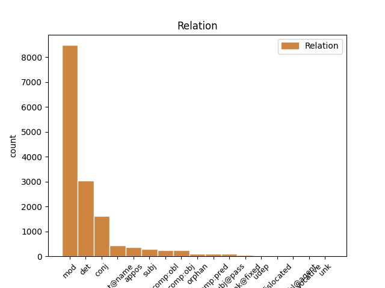
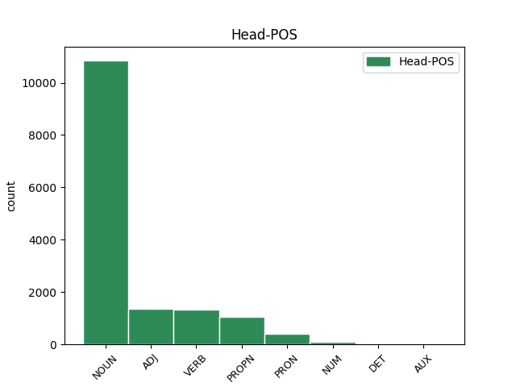
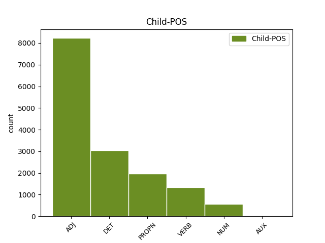

Distribution of features within this leaf



Agreement Rules sorted by frequency.
When the dependent token is None
1 Obiurgationes _ _ _ _ 0 _ _ _
2 etiam _ _ _ _ 0 _ _ _
3 non _ _ _ _ 0 _ _ _
4 numquam _ _ _ _ 0 _ _ _
5 incidunt _ _ _ _ 0 _ _ _
6 necessariae _ _ _ _ 0 _ _ _
7 in _ _ _ _ 0 _ _ _
8 quibus _ _ _ _ 0 _ _ _
9 utendum _ _ _ _ 0 _ _ _
10 est _ _ _ _ 0 _ _ _
11 fortasse _ _ _ _ 0 _ _ _
12 et _ _ _ _ 0 _ _ _
13 vocis _ _ _ _ 0 _ _ _
14 contentione contentio NOUN Nb Case=Abl|Gender=Fem|Number=Sing 0 _ _ _
15 maiore magnus ADJ A- Case=Abl|Degree=Cmp|Gender=Fem|Number=Sing 14 mod _ ref=1.136
16 et _ _ _ _ 0 _ _ _
17 verborum _ _ _ _ 0 _ _ _
18 gravitate _ _ _ _ 0 _ _ _
19 acriore _ _ _ _ 0 _ _ _
20 id _ _ _ _ 0 _ _ _
21 agendum _ _ _ _ 0 _ _ _
22 etiam _ _ _ _ 0 _ _ _
23 ut _ _ _ _ 0 _ _ _
24 ea _ _ _ _ 0 _ _ _
25 facere _ _ _ _ 0 _ _ _
26 videamur _ _ _ _ 0 _ _ _
27 irati _ _ _ _ 0 _ _ _
When the dependent token is None
1 Sed _ _ _ _ 0 _ _ _
2 ut _ _ _ _ 0 _ _ _
3 ad _ _ _ _ 0 _ _ _
4 urendum _ _ _ _ 0 _ _ _
5 et _ _ _ _ 0 _ _ _
6 secandum _ _ _ _ 0 _ _ _
7 sic _ _ _ _ 0 _ _ _
8 ad _ _ _ _ 0 _ _ _
9 hoc _ _ _ _ 0 _ _ _
10 genus _ _ _ _ 0 _ _ _
11 castigandi _ _ _ _ 0 _ _ _
12 raro _ _ _ _ 0 _ _ _
13 inviti _ _ _ _ 0 _ _ _
14 que _ _ _ _ 0 _ _ _
15 veniemus _ _ _ _ 0 _ _ _
16 ne _ _ _ _ 0 _ _ _
17 c _ _ _ _ 0 _ _ _
18 umquam _ _ _ _ 0 _ _ _
19 nisi _ _ _ _ 0 _ _ _
20 necessario _ _ _ _ 0 _ _ _
21 si _ _ _ _ 0 _ _ _
22 nulla _ _ _ _ 0 _ _ _
23 reperietur _ _ _ _ 0 _ _ _
24 alia alius DET Px Case=Nom|Gender=Fem|Number=Sing 25 det _ ref=1.136
25 medicina medicina NOUN Nb Case=Nom|Gender=Fem|Number=Sing 0 _ _ _
When the dependent token is None
1 Uberior _ _ _ _ 0 _ _ _
2 oratio _ _ _ _ 0 _ _ _
3 L Lucius PROPN Ne Case=Gen|Gender=Masc|Number=Sing 0 _ _ _
4 Crassi Crassus PROPN Ne Case=Gen|Gender=Masc|Number=Sing 3 flat@name _ ref=1.133
5 ne _ _ _ _ 0 _ _ _
6 c _ _ _ _ 0 _ _ _
7 minus _ _ _ _ 0 _ _ _
8 faceta _ _ _ _ 0 _ _ _
9 sed _ _ _ _ 0 _ _ _
10 bene _ _ _ _ 0 _ _ _
11 loquendi _ _ _ _ 0 _ _ _
12 de _ _ _ _ 0 _ _ _
13 Catulis _ _ _ _ 0 _ _ _
14 opinio _ _ _ _ 0 _ _ _
15 non _ _ _ _ 0 _ _ _
16 minor _ _ _ _ 0 _ _ _
When the dependent token is None
1 Ut _ _ _ _ 0 _ _ _
2 enim _ _ _ _ 0 _ _ _
3 sermone _ _ _ _ 0 _ _ _
4 eo _ _ _ _ 0 _ _ _
5 debemus _ _ _ _ 0 _ _ _
6 uti _ _ _ _ 0 _ _ _
7 qui _ _ _ _ 0 _ _ _
8 innatus _ _ _ _ 0 _ _ _
9 est _ _ _ _ 0 _ _ _
10 nobis _ _ _ _ 0 _ _ _
11 ne _ _ _ _ 0 _ _ _
12 ut _ _ _ _ 0 _ _ _
13 quidam quidam ADJ Px Case=Nom|Gender=Masc|Number=Sing 0 _ _ _
14 Graeca _ _ _ _ 0 _ _ _
15 verba _ _ _ _ 0 _ _ _
16 inculcantes inculco VERB V- Case=Nom|Gender=Masc|Number=Plur|Tense=Pres|VerbForm=Part|Voice=Act 13 orphan _ ref=1.111
17 iure _ _ _ _ 0 _ _ _
18 optimo _ _ _ _ 0 _ _ _
19 rideamur _ _ _ _ 0 _ _ _
20 sic _ _ _ _ 0 _ _ _
21 in _ _ _ _ 0 _ _ _
22 actiones _ _ _ _ 0 _ _ _
23 omnem _ _ _ _ 0 _ _ _
24 que _ _ _ _ 0 _ _ _
25 vitam _ _ _ _ 0 _ _ _
26 nullam _ _ _ _ 0 _ _ _
27 discrepantiam _ _ _ _ 0 _ _ _
28 conferre _ _ _ _ 0 _ _ _
29 debemus _ _ _ _ 0 _ _ _
When the dependent token is None
1 Intellegendum _ _ _ _ 0 _ _ _
2 etiam _ _ _ _ 0 _ _ _
3 est _ _ _ _ 0 _ _ _
4 duabus duo NUM Ma Case=Abl|Gender=Fem|Number=Plur 11 mod _ ref=1.107
5 quasi _ _ _ _ 0 _ _ _
6 nos _ _ _ _ 0 _ _ _
7 a _ _ _ _ 0 _ _ _
8 natura _ _ _ _ 0 _ _ _
9 indutos _ _ _ _ 0 _ _ _
10 esse _ _ _ _ 0 _ _ _
11 personis persona NOUN Nb Case=Abl|Gender=Fem|Number=Plur 0 _ _ _
When the dependent token is None
1 si _ _ _ _ 0 _ _ _
2 pacem _ _ _ _ 0 _ _ _
3 populus _ _ _ _ 0 _ _ _
4 Romanus _ _ _ _ 0 _ _ _
5 cum _ _ _ _ 0 _ _ _
6 Helvetiis _ _ _ _ 0 _ _ _
7 faceret _ _ _ _ 0 _ _ _
8 in _ _ _ _ 0 _ _ _
9 eam _ _ _ _ 0 _ _ _
10 partem _ _ _ _ 0 _ _ _
11 ituros eo VERB V- Case=Acc|Gender=Masc|Number=Plur|Tense=Fut|VerbForm=Part|Voice=Act 0 _ _ _
12 atque _ _ _ _ 0 _ _ _
13 ibi _ _ _ _ 0 _ _ _
14 futuros sum AUX V- Case=Acc|Gender=Masc|Number=Plur|Tense=Fut|VerbForm=Part|Voice=Act 11 conj _ ref=1.13.3
15 Helvetios _ _ _ _ 0 _ _ _
16 ubi _ _ _ _ 0 _ _ _
17 eos _ _ _ _ 0 _ _ _
18 Caesar _ _ _ _ 0 _ _ _
19 constituisset _ _ _ _ 0 _ _ _
20 atque _ _ _ _ 0 _ _ _
21 esse _ _ _ _ 0 _ _ _
22 voluisset _ _ _ _ 0 _ _ _
Disagree Examples:
1 liber _ _ _ _ 0 _ _ _
2 generationis generatio NOUN Nb Case=Gen|Gender=Fem|Number=Sing 0 _ _ _
3 Iesu Iesus PROPN Ne Case=Gen|Gender=Masc|Number=Sing 2 mod _ ref=MATT_1.1
4 Christi _ _ _ _ 0 _ _ _
5 filii _ _ _ _ 0 _ _ _
6 David _ _ _ _ 0 _ _ _
7 filii _ _ _ _ 0 _ _ _
8 Abraham _ _ _ _ 0 _ _ _
1 Iacob _ _ _ _ 0 _ _ _
2 autem _ _ _ _ 0 _ _ _
3 genuit _ _ _ _ 0 _ _ _
4 Ioseph _ _ _ _ 0 _ _ _
5 virum vir NOUN Nb Case=Acc|Gender=Masc|Number=Sing 0 _ _ _
6 Mariae Maria PROPN Ne Case=Gen|Gender=Fem|Number=Sing 5 mod _ ref=MATT_1.16
7 de _ _ _ _ 0 _ _ _
8 qua _ _ _ _ 0 _ _ _
9 natus _ _ _ _ 0 _ _ _
10 est _ _ _ _ 0 _ _ _
11 Iesus _ _ _ _ 0 _ _ _
12 qui _ _ _ _ 0 _ _ _
13 vocatur _ _ _ _ 0 _ _ _
14 Christus _ _ _ _ 0 _ _ _
1 Christi Christus PROPN Ne Case=Gen|Gender=Masc|Number=Sing 3 mod _ ref=MATT_1.18
2 autem _ _ _ _ 0 _ _ _
3 generatio generatio NOUN Nb Case=Nom|Gender=Fem|Number=Sing 0 _ _ _
4 sic _ _ _ _ 0 _ _ _
5 erat _ _ _ _ 0 _ _ _
1 haec hic ADJ Pd Case=Acc|Gender=Neut|Number=Plur 4 comp:obj _ ref=MATT_1.20
2 autem _ _ _ _ 0 _ _ _
3 eo _ _ _ _ 0 _ _ _
4 cogitante cogito VERB V- Case=Abl|Gender=Masc|Number=Sing|Tense=Pres|VerbForm=Part|Voice=Act 0 _ _ _
5 ecce _ _ _ _ 0 _ _ _
6 angelus _ _ _ _ 0 _ _ _
7 Domini _ _ _ _ 0 _ _ _
8 in _ _ _ _ 0 _ _ _
9 somnis _ _ _ _ 0 _ _ _
10 apparuit _ _ _ _ 0 _ _ _
11 ei _ _ _ _ 0 _ _ _
12 dicens _ _ _ _ 0 _ _ _
1 exsurgens _ _ _ _ 0 _ _ _
2 autem _ _ _ _ 0 _ _ _
3 Ioseph _ _ _ _ 0 _ _ _
4 a _ _ _ _ 0 _ _ _
5 somno _ _ _ _ 0 _ _ _
6 fecit _ _ _ _ 0 _ _ _
7 sicut _ _ _ _ 0 _ _ _
8 praecepit _ _ _ _ 0 _ _ _
9 ei _ _ _ _ 0 _ _ _
10 angelus _ _ _ _ 0 _ _ _
11 Domini _ _ _ _ 0 _ _ _
12 et _ _ _ _ 0 _ _ _
13 accepit _ _ _ _ 0 _ _ _
14 coniugem coniunx NOUN Nb Case=Acc|Gender=Masc|Number=Sing 0 _ _ _
15 suam suus ADJ Pt Case=Acc|Gender=Fem|Number=Sing|Person=3|Poss=Yes|Reflex=Yes 14 mod _ ref=MATT_1.24